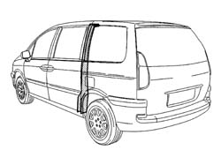
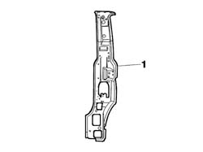
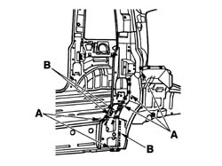
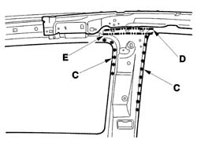
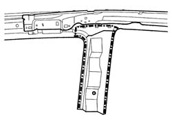
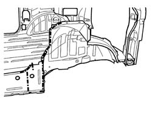
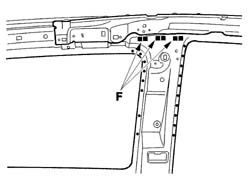
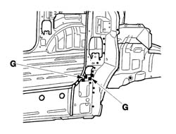
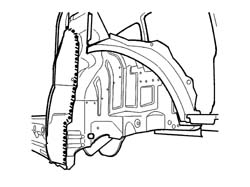

7210B30 REAR PILLAR
- Path
- Procedures > 72 PANELS AND FRAME > 7210 REMOVING REFITTING > 7210B STRUCTURE ELEMENTS-CENTRAL AND REAR PART > 7210B30 REAR PILLAR
- Kind
- repair procedure (removal / refitting; the operation number is the code)
- Applies to
- all engines; all production periods
- Interactive page
- https://sloeber94.github.io/elrnDB-fUlss/en/#/179007959
Applies to: all engines; all production periods
Applies to: all engines; all production periods
 Removing
Removing
 Refitting
Refitting- Work on the component highlighted making sure previously that the equipment illustrated below is available.

Applies to: all engines; all production periods
1. Rear pillar.

Applies to: all engines; all production periods
- Using a chamfering machine, reduce the spot welds illustrated (A).
- Using a disc grinder, remove the weld beads (B).

Applies to: all engines; all production periods
- Using a chamfering machine, reduce the spot welds indicated (C).
- Using a disc grinder, remove the brazing beads (D).
- Cut the upper part of the rear pillar along the line shown in the diagram (E).
- Remove the rear pillar.

Applies to: all engines; all production periods
- Prepare the edges for welding and protect them using thermoweldable primer.

Applies to: all engines; all production periods
- Prepare the edges for welding and protect them using thermoweldable primer.

Applies to: all engines; all production periods
Refitting
Removing- Position the rear foot and the partial rear section on the passenger compartment side and secure using self-locking clamps then, after having checked that the alignment is correct, dismantle the partial rear section on the passenger compartment side and proceed as described below.
- Proceed with brazing at the points shown in the diagram (F) then, using a spot welder, weld as illustrated in the diagram.

Applies to: all engines; all production periods
- Proceed with MIG welding in the areas (G) shown in the diagram and finish off in the remaining areas using a spot welder then grind the welds using a disc grinder.

Applies to: all engines; all production periods
- Apply sealing compound along the lines illustrated in the diagram.

Applies to: all engines; all production periods
- Grind the welds using a disc grinder.
- Check that the welded component is correctly positioned.
- Apply electro-galvanizing paint to the ground parts.
- Proceed with waxing the box sections.